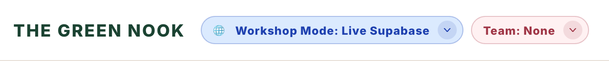

Session Timeline
You're in a War Room prepping for an impending launch. A stakeholder report just came in — there are bugs that need to be fixed ASAP.
Kickoff
Set the stage, walk through goals, mindset, and AI prompting.
Bug Blitz
Form your War Room squad, consider the perspectives in the room, and review the Bug Report from stakeholders.
Debrief
Review pillars and share your War Room experience. If time allows, we will review a bug together.
Setup
Using AI during the exercise? Keep the AI prompting tips handy.
What to Bring
Required
- A laptop with a modern web browser
Optional (but helpful)
- A free-tier AI account (ChatGPT, Gemini, Claude, etc.)
- An AI coding assistant (Cursor, Windsurf, GitHub Copilot)
- Familiarity with browser DevTools
We Provide
- The Bug Blitz app with pre-baked bugs
- Workshop Guide
- Bug Report from stakeholders
- Cheat sheet with hints
Accessing the Codebase & Website
Launch the app in StackBlitz for a quick-start workspace with no installation required. If you prefer running locally, you can clone the repository from GitHub.
Launch the Workshop App
Launch in StackBlitz
Enter your table number or scan the QR code at your table. This selects your team for sharing live data in Supabase.
⚠️ Important:
The ?team=<id> parameter routes database requests
to your team's shared schema in Supabase. Do not remove it.
Clone & Run Locally
Prerequisite: Node.js 22 or newer.
Check your version with node --version.
💻 Need to install or upgrade Node? Download it from nodejs.org, or use a version manager: nvm on macOS/Linux or nvm-windows on Windows.
Clone the repository from https://github.com/marisamachlis/bugblitz-ghc2026, then choose one of the paths below.
Recommended and works on any OS.
npm install && npm start
If you already have make and nvm,
the repo can handle setup and startup for you.
make setup && make dev
If make errors or is not set up, we recommend following Path A.
Select Your Team
Open http://localhost:4200/ once the app starts. Click the
Team badge in the header, enter your assigned team
number, and click Set team.
Note that you can still participate with Team: None, but live Supabase data will be shared with other participants who haven’t selected a team.
View or Update Your Current Setup

On a small viewport width, open the hamburger menu (☰) to find the badges.
Explore the App
Browse the plant store — shop for plants, add items to cart, try checking out. Notice anything off? That's a bug. Use browser DevTools to inspect the page and view the console, network tools, and DOM.
Open DevTools with
F12,
Option + Command + I on Mac, or
Ctrl + Shift + I on Windows.
Read the Bug Report
Your team will review a Bug Report with issues reported by stakeholders — some vague, some specific.
Prioritize & Fix
As a team, decide which bugs to tackle first based on severity, time constraints, and perspectives across the team.
What Success Looks Like
- Prioritize and explain why. Review the reported bugs, assign priority based on customer and business impact, and adjust the starting effort estimates as needed. Agree on what your team should tackle first.
- Investigate and choose an approach. Reproduce an issue and trace its cause using DevTools and, if helpful, AI. Decide whether a workaround or a fuller fix fits the impact and time available.
- Make and verify a change. Implement your approach, check that it addresses the issue, and look for unintended effects.
- Share your reasoning. Be ready to explain what you found, why you chose your approach, and what remains for a future release.
Need support? See AI prompting tips, debugging hints, and the Workshop Recap.